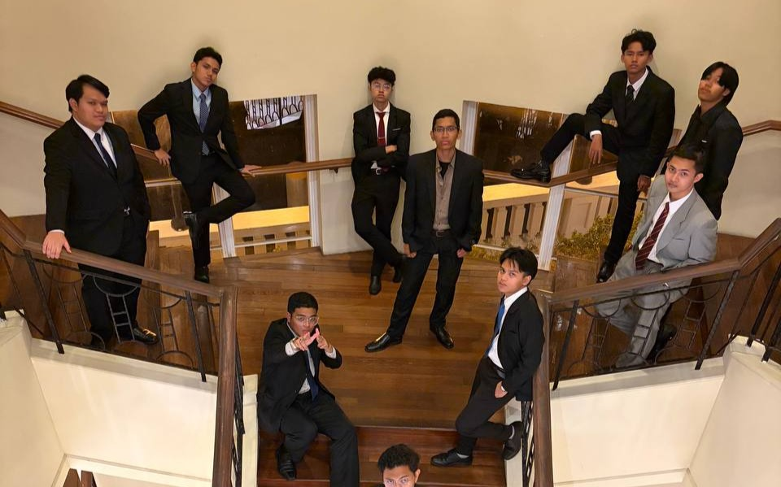

Our Story


MyLuanier began as a collaborative project between three students who realized that many of their peers struggled to understand the difference between STPM, Matrikulasi, Foundation, and Diploma. We decided to build a tool that makes that choice clear.

To eliminate confusion and anxiety by providing data-backed, personalized academic roadmaps through innovative technology.
To be the leading digital compass for every Malaysian student transitioning from secondary school to higher education.
Foundation in Computing
Yayasan TM Scholar
Responsible for the core logic and system security. Mukhlis ensures that every merit calculation and recommendation is mathematically sound.
Foundation in Computing
Yayasan TM Scholar
The creative force behind the visuals. Husain's focus is on making the complex world of academic data look beautiful and intuitive.
Foundation in Computing
JPA Scholar
The master of the Information Hub. Afif meticulously curates the scholarship databases and pathway rules to ensure accuracy.